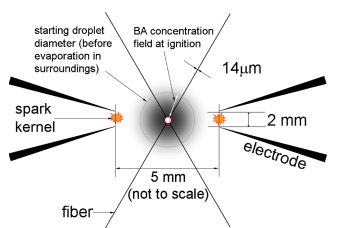
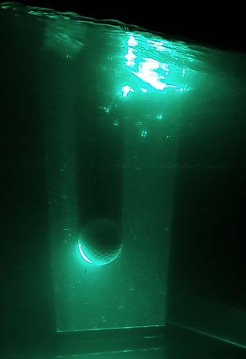
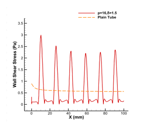
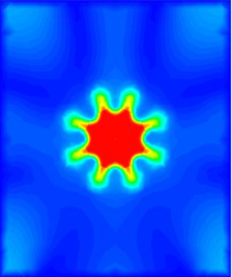
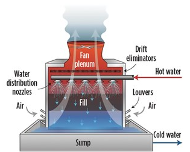
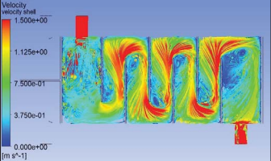
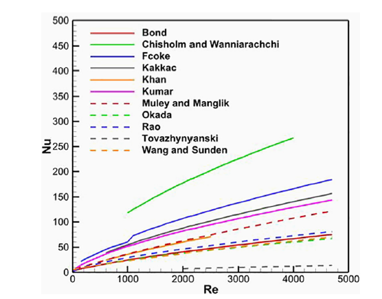

|  | Experimental Investigation of Ignition of Fuel Droplets at Elevated Pressures We investigate ignition of different petroleum based fuels at elevated pressures. A second part of the work also involves experimenting with different fuel igntiion systems- spark ignition and hot wires. |
|  | Comparison of Aerodynamic Characteristics of a Golf Ball and a Ping Pong Ball using PIV Imaging Focus of this study is aimed at investigating how dimples on a golf ball reduce the aerodynamic drag when compared to a ping pong ball. PIV imaging was used for the same. |
| Conceptual Design of a HALE UAV for Coastal Surveying UAVs have been increasingly used in recent years in numerous domains due to their adaptability and versatility. The goal of the present study is to propose a methodology for the conceptual design of a HALE UAV for coastal surveying using analytical tools. |
|
|  | Hemodynamic characteristics in straight and wavy arteries Hemodynamic characteristics in straight and wavy arteries were numerically investigate using ANSYS Fluent. Analysis was done both for steady and unsteady flow. It is important to study hemodynamic characteristics which helps in the early identification of various ailments such as plaque formation. It was also found that if waviness of the arteries increases with age, there are chances of reducing wall shear stress especially at the crest and trough of the blood vessel. |
|  | Computational Analysis of Turbulent Characteristics from a Chevron Nozzle Turbulent characteristics from a chevron nozzle with a crest angle of 45° were studied for an exit Mach number of 0.8. Turbulence which is the cause of jet noise is reduced by the enhanced mixing between the two fluids which is due to the formation of counter-rotating vortices in a chevron nozzle. |
|  | Parametric Study on Cooling Tower Performance The present study aimed at analyzing the effects of parameters such as outlet temperature of cooling water, dry bulb temperature of air, height and shape on the performance of the cooling tower to increase the efficiency of the system. It was found that there are many parameters which affect the performance of the cooling tower. These include filler material, temperature of the cooling fluid, flow rate of the cooling fluid, and the wet bulb temperature. |
|  | Heat Transfer Augmentation using Vortex Generators in a Shell and Tube Heat Exchanger The purpose of this study was to use vortex generators as a passive device in the baffle window to diminish recirculation zones. It was observed that the wedge with an angle of 75° gave the best performance with an augmentation in heat transfer rate by about 11.30% but pressure drop was a penalty. |
|  | Numerical analysis of performance parameters of a Gasketed Plate Heat Exchanger The analysis is divided into three parts. The first part of the study determines the correlation suitable for the GPHE based on the chevron angle and flow conditions. The second part investigates the comparison between a corrugated plate heat exchanger and a flat plate for the same effective area of heat transfer. The final part investigates how chevron angle affects the rate of heat transfer and turbulence intensity. |